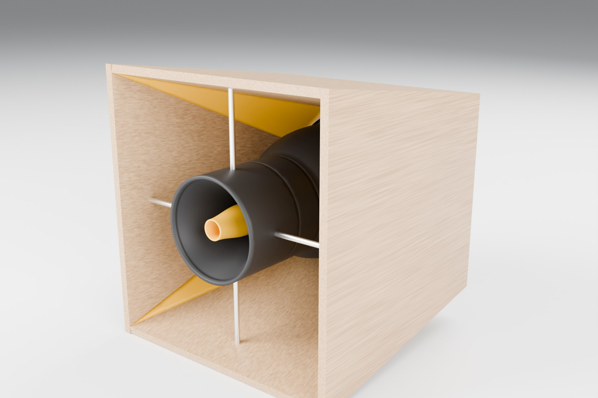
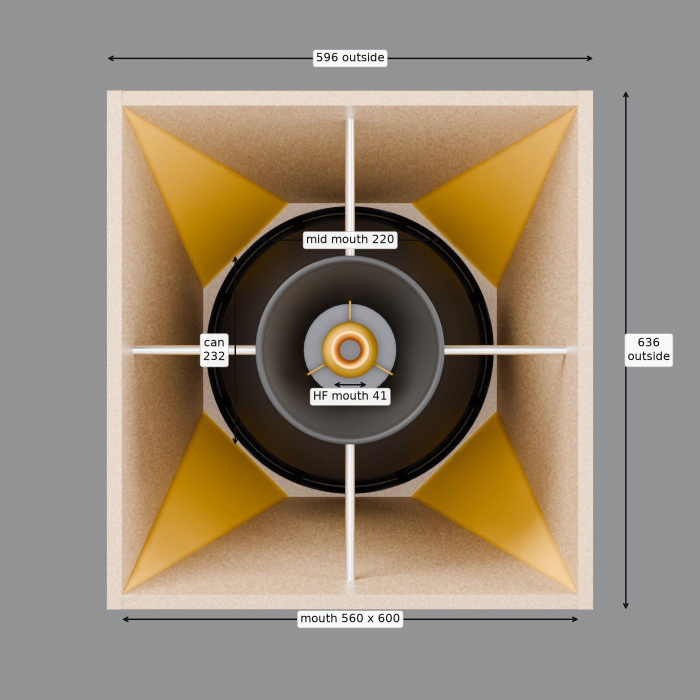
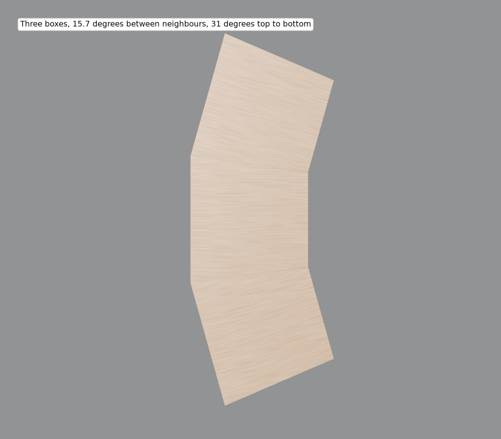
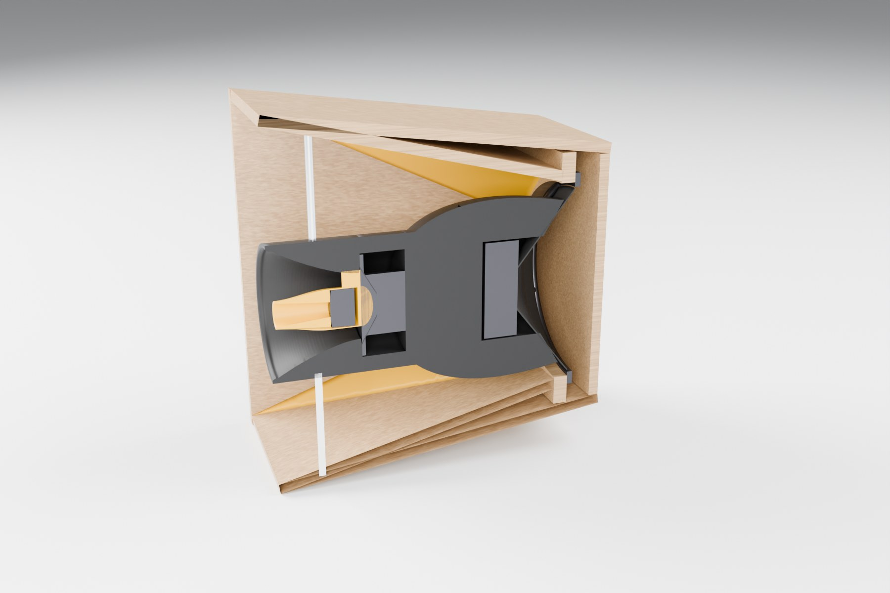

Sunflower
A three-way coaxial horn where each horn's phase plug is the next horn. A 18 Sound ND1030 on a small printed horn sits in the middle of an oblate spheroidal (OS) mid horn and is its phase plug. The mid horn and its 6.5 inch driver sit in a can that is the end of a one-piece centre body, which is the phase plug of a reversed 15 inch kick horn. It follows the Funktion-One Res layout (kick, wide-band mid, small HF) on one axis.

Status. Version 0.2, simulated only. What changed from v0.1 and what is still missing is on the v0.2 review page.
Stacks
The top and bottom of the cabinet are angled, so boxes stack into a splayed column: 15.7 degrees between neighbours.



Three horns, one axis, designed from the inside out
HF, 3.5 kHz up
18 Sound ND1030 (compression), 65 mm body cylinder. A printed horn, 41 mm at the mouth, runs to just inside the mid mouth. Its outside is the tapering tip of the mid phase plug.
Mid, 500 Hz to 3.5 kHz
Beyma 6MCF200Nd (6.5 inch). Its cone is at least 1.6 times the 69 mm plug. Oblate spheroidal (os) open-area law from a 2.2:1 annular throat to a 220 mm mouth over 150 mm, with the plug always subtracted.
Kick, up to 500 Hz
Eminence DELTA-15LFA, mounted backwards. The one-piece centre body's rear face follows the cone, so the throat is a narrow 2.3:1 annulus. A tube-like kick horn, 500 mm long, 560 x 600 mm mouth.



Specification
| Value | Notes | |
|---|---|---|
| Type | Three-way coaxial horn, active | Kick bin with wide-band mid and HF; use with a sub |
| Sensitivity | 103.5 dB | 2.83 V, 1 m |
| Response | 81 Hz to 16 kHz, -3 dB | On axis after DSP. No-sub shelf: -6 dB at 61 Hz, up to about 48 W |
| Crossovers | 500 Hz and 3.5 kHz | Linkwitz-Riley 24 dB/oct |
| Drivers | Eminence DELTA-15LFA, Beyma 6MCF200Nd, 18 Sound ND1030 | |
| Cabinet | 596 wide, 636 high at the front, 479 at the back, 588 deep | 18 mm birch ply; 15.7 degree splay |
| HF unit price | $150 | Retail, see the Design page |